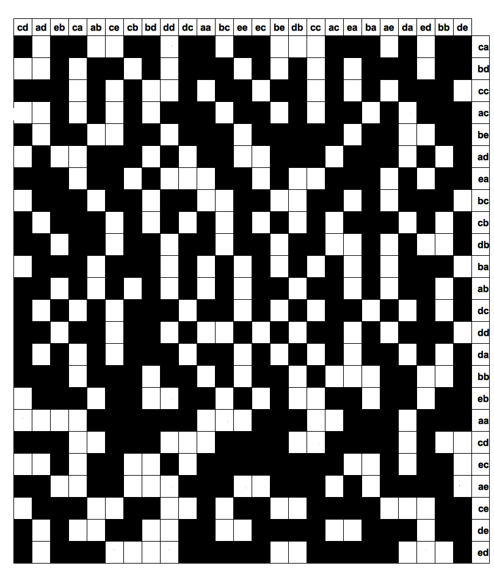

Le Rasterschlüssel 44
Le Rasterschlüssel 44 (abrévié ci-après RS44), littéralement le chiffre à grille 44, est un système de cryptographie à la main utilisé par l'armée allemande à partir de mars 1944. En parallèle des machines Enigma et Lorenz, qui étaient utilisés pour les communications entre états-majors, le RS44 était utilisé pour les communications tactiques sur le terrain, quand le besoin de confidentialité était moins important.
Le RS44 est un chiffre basé sur une transposition. Il utilise d'une part d'une grille de 25 lignes et de 24 colonnes. Chaque ligne comporte 10 cellules blanches, dans lesquelles seront inscrites les lettres du texte clair, les autres cellules étant noires. En outre, chaque ligne et chaque colonne est numérotée par un couple de lettres parmi A,B,C,D,E, les numéros de deux colonnes ou de deux lignes étant toujours différents :
D'autre part, on dispose d'un tableau permettant de chiffrer les digraphes des lignes et des colonnes comme le suivant :
| A | B | C | D | E |
| V | B | K | U | A |
| C | L | X | R | D |
| M | Y | S | F | N |
| Z | O | G | P | I |
| H | Q | E | W | T |
Supposons que l'on veuille chiffrer le message suivant :
LIVRAISON DES MUNITIONS PREVUE DEMAIN APRES MIDI. ENVOYEZ VOS BESOINS AVANT CE SOIR DERNIER DELAI.
On commence par choisir au hasard une colonne et une ligne de la grille. Par exemple, choisissons ici la colonne CE et la ligne AE. On inscrit alors le message à chiffrer dans les cases blanches de la grille, de gauche à droite et de haut en bas, à partir de la cellule correspondant à cette colonne et cette ligne. Ici, on écrit donc :
On choisit ensuite une colonne au hasard, par exemple ici la colonne AB. Le message chiffré est obtenu en lisant alors la colonne AB, puis celle située juste à sa droite, et ainsi de suite jusqu'à la colonne CA. On obtient donc le message chiffré suivant :
DADPI VRIEA BLIAN IRNEE NVSEA MTNIU VBRUC AVOEN POIRY IERIE NSDDS EOTEI EZSOE SLMIO VRNIO DLNXS AES
En réalité, le message envoyé est un peu plus compliqué. Il faut aussi envoyer d'une part la colonne et la ligne sélectionnées pour débuter l'écriture du texte dans la grille, d'autre part la colonne choisie pour commencer la lecture de la grille. On ne transmet par directement en clair CE AE AB, mais on utilise le second tableau de chiffrement. On pourra ainsi envoyer, parmi beaucoup d'autres possibilités, le séquence KN ZT CL.
Enfin, l'opérateur chargé du chiffrement envoyait également l'heure du message, ainsi que sa longueur (ceci notamment afin de faciliter le déchiffrement). Le message final envoyé serait donc :
1400 83 KN ZT CL DADPI VRIEA BLIAN IRNEE NVSEA MTNIU VBRUC AVOEN POIRY IERIE NSDDS EOTEI EZSOE SLMIO VRNIO DLNXS AES
Parlons justement du déchiffrement. On commence par marquer les cellules utilisées pour chiffrer. On peut faire cela, car on dispose de l'emplacement de la cellule initiale, ainsi que de la longueur du texte. Ensuite, on écrit le texte colonne par colonne, à partir de la colonne mentionnée dans le début du message, en n'utilisant bien entendu que les cellules marquées. Enfin, on lit le texte tout à fait normalement à partir de la cellule initiale.
Le RS44 est une méthode de cryptographie étonnamment puissante, d'abord, par le nombre de clés possibles. En effet, chaque jour, la grille était changée, ce qui signifie à la fois qu'il fallait choisir les cellules blanches de la grille, la façon de renuméroter les lignes et les colonnes. De plus, le tableau de chiffrement des digraphes des lignes et des colonnes changeait chaque jour aussi.
La structure de la méthode de chiffrement était aussi un point fort du RS44. Ainsi, puisque les cases blanches sont distribuées irrégulièrement dans les colonnes, la transposition effectuée est très irrégulière. Cela dit, le fait d'imposer dix cases blanches par ligne était sans doute une faiblesse.
Enfin, puisque pour chaque message l'opérateur choisit au hasard la première case de la grille où il inscrit le message et aussi la colonne de départ du chiffrement, la transposition effectuée change à chaque chiffrement, même sans changer de grille, rendant le décryptage plus difficile.
De façon ironique, alors que l'Allemagne réservait la machine Enigma pour ses communications importantes et le RS44 pour le chiffrement léger, les alliés déchiffraient très bien les communications chiffrées par Enigma, mais avaient beaucoup de difficultés pour celles chiffrées par le RS44. Il faut aussi avouer que, ces dernières contenant des informations moins stratégiques, les moyens attribués à leur déchiffrement étaient beaucoup plus limités.
Un autre aspect étrange du RS44 est que son origine est ... britannique! C'est en effet le brigadier J. Tiltman, un officier britannique, qui proposa en 1941 une méthode de chiffrement très proche basée également sur une grille remplie de cases noires et de cases blanches et servant de base à une transposition. Cette méthode, baptisée Cysquare, fut utilisée par les troupes britanniques en Afrique du nord, mais de façon très maladroite : les opérateurs étaient invités à utiliser la même grille le plus souvent possible. Cette méthode fut découverte par les allemands lors d'une victoire des troupes de Rommel et adaptée par l'armée allemande.